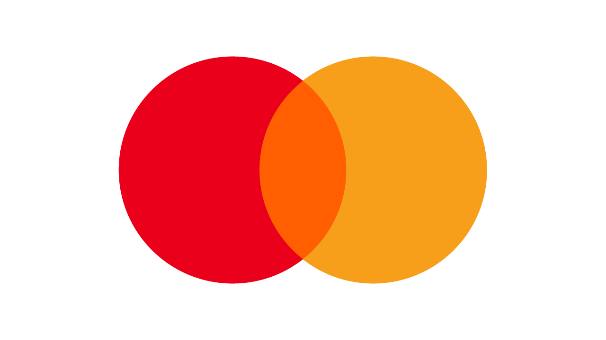

Security Consulting


Summary of the Course
This Course provided a practical insight into the core responsibilities carried out by a Security Consulting firm. specifically focused on risk assessments,mitigation advice and executive reporting. The module took a deep dive into Risk Reports involving the use of common compliance frameworks such as SOX & NIST, while actively testing the professional communication skills needed to present findings directly to corporate stakeholders.
Learning Objectives
The primary focus of this course was split into many different activities and goals to help gain a deeper understanding of Risk Consulting and Communication, Those were:
- To gain an understanding on risk identification and constructing risk reports alongside the ability to offer mitigation advice
- lign identified vulnerabilities and mitigation strategies with standard regulatory and compliance frameworks.
- To strenghten communication and presentation skills in order to easily convey ideas & risk to other stakeholders
- Deepen knowledge of concepts such as the SDLC and the critical role of IT auditing in maintaining security baselines.
Work Produced & Problems Overcome
In this course My first task was to
My next task was to identify the departments that had clicked the Phishing email the most and try and gain an understanding on why. Clear communication and spreading awareness relies on targeting vulnerable departments and individuals who may not possess the technical awareness that other people/departments have. The task had me compare percentages and write a report on why I thought they were most vulnerable.
For my last task I was assigned with researching, designing and creating an In depth specialized security awareness presentation with the goal being to spread awareness and highlight preventive methods of Phishing. The presentation had to be informative and concise while simultaneously being short and engaging. I created my presentation using Google Slides along with researching articles by IBM & NSCS. Creating the presentation helped me sharpen my education and communication skills while also allowing me to gain a better understanding on the dangers of phishing and how to prevent yourself from contributing to the $500 billion loss due to cyber crime.
Tools Used
To Complete this course it involved research and creative design which was completed using recognisable and trusted sources along with a presentation creator that allowed me to design and bring an informative and concise presentation to life. The tools I used:


Learning Outcomes
This Course was extremely useful and informative for me as it sharpened my skills in Social Engineering, Researching, Security awareness & Educating. The course was very well built and helped me gain an understanding of phishing and the dangers it can bring. It put into perspective the simplicity and common traps used to lie and deceive people. Overall, this course improved my creativity & communication while providing me with a deep knowledge of phishing, the dangers associated with it, how to identify it, and ways to prevent it.
Certificate
The official certificate awarded to me after the completion of the course:

Certificate ID: 7ZbZtAe8JbnLEAhou
Coursework Archive
Want to check out my coursework that I completed, check out the folder below to see my presentations, emails etc:


Want to complete this simulation task matrix Yourself? Launch the official course on Forage here: